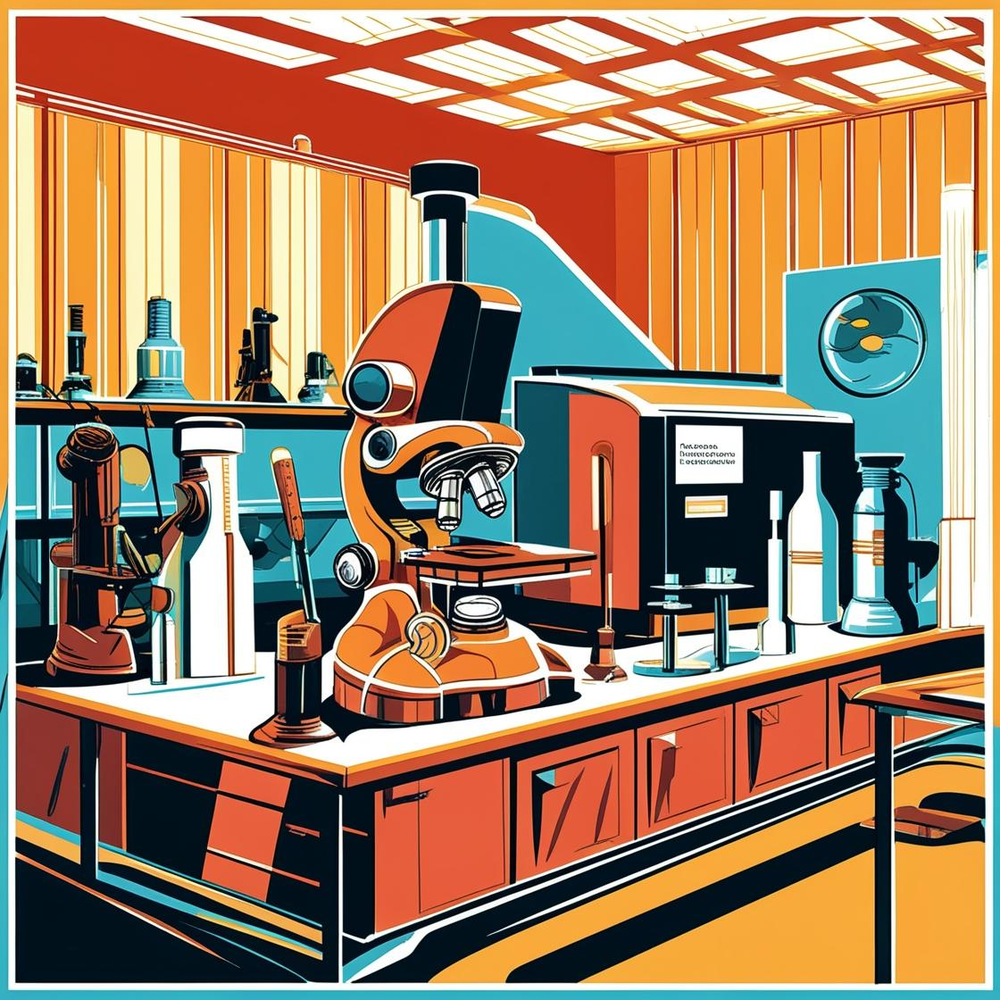
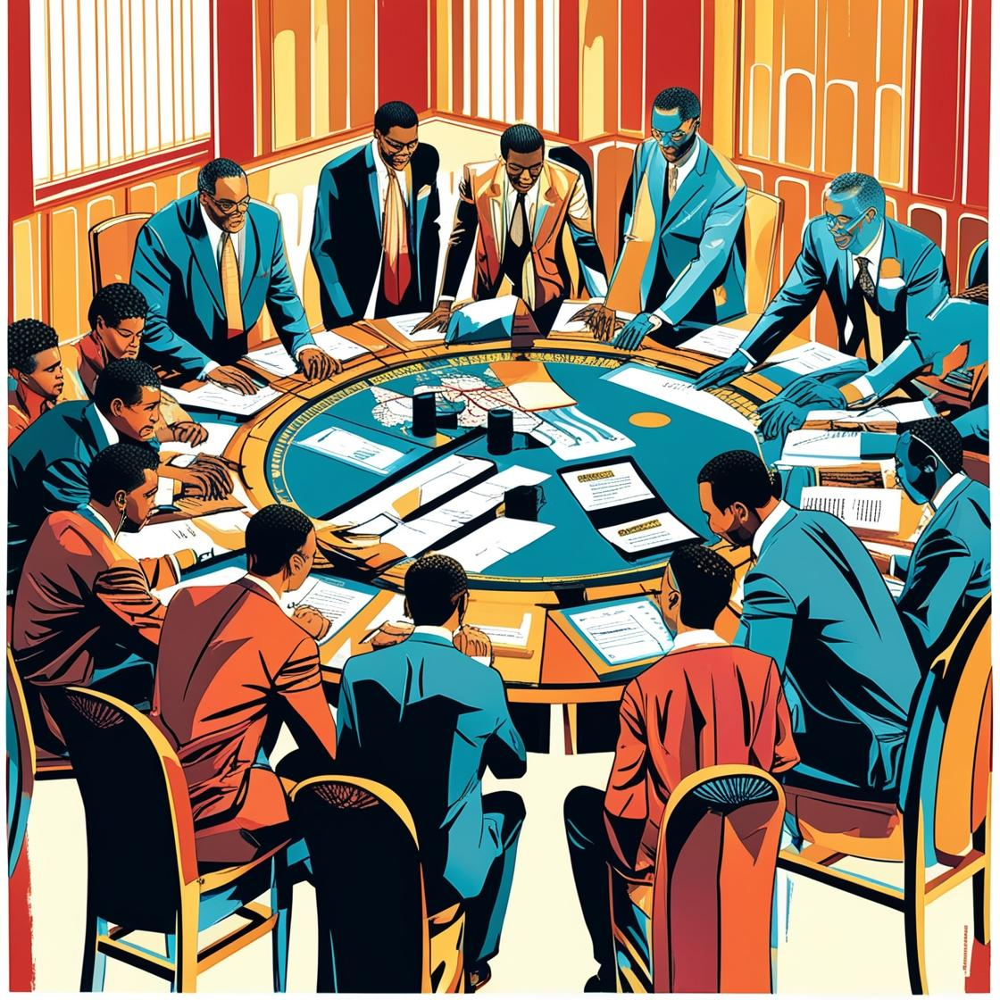

Program
| Start | End | Session |
|---|---|---|
| 08:00 | Doors Open | |
| 08:30 | 09:00 | Welcome and Introduction |
| 09:00 | 10:40 | Session 1 - Research |
| 10:40 | 11:00 | Coffee Break |
| 11:00 | 12:30 | Session 2 - Practice |
| 12:30 | 13:30 | Lunch |
| 13:30 | 15:30 | Session 3 - Policy |
| 15:30 | 16:00 | Coffee Break |
| 16:00 | 17:30 | Session 4 - Networking |
| 17:30 | Reception |
-

Session 1 - Research
Advancing Responsible AI: Developments at the Research Level
This session provides an expert-driven overview of emerging research trends in responsible AI.
Talks
- Jerzy Stefanowski (Poznan University of Technology, Poland)
"The Role of Counterfactual Explanations: New Methods and Open Challenges" - Kostas Stefanidis (Tampere University, Finland)
"Responsible Recommender Systems" - Asia Biega (Max Planck Institute for Security and Privacy, Germany)
- Eirini Ntoutsi (Bundeswehr University Munich, Germany)
"Interventions for Algorithmic Fairness"
- Jerzy Stefanowski (Poznan University of Technology, Poland)
-

Session 2 - Practice
Implementing Responsible AI: Approaches from Research Programs, Academia, and Industry
This session brings together Belgium’s three AI research programs (FARI, FAIR, and TRAIL) to share their research insights and practical perspectives on responsible AI.
-

Session 3 - Policy
Shaping Responsible AI: Europe’s Global Position on Responsible AI
This session includes presentations and a panel on the EU’s policy and strategic approach to responsible AI, featuring insights from the European AI Office.
-

Session 4 - Networking
Connecting for Responsible AI: Showcasing Project Ideas and Research Expertise
This session fosters networking among members of Belgium’s three AI research programmes and explores opportunities for collaboration.